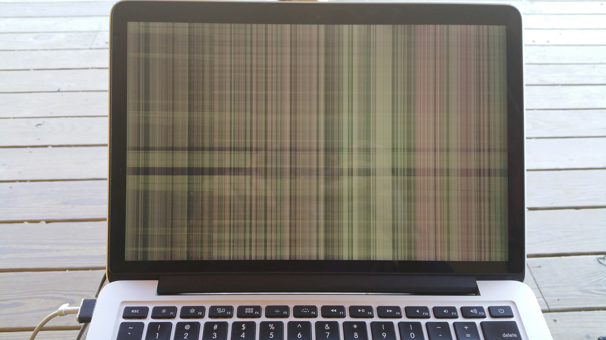

Screen tearing/ bars
The laptop will randomly turn the display into something similiar to what is in the picture to the right. I have not found a pattern as to when or why this happens. The screen itself works fine otherwise, and this issue also occurs sometimes even when the laptop is stationary on a desk. (So I don't think it's a loose contact)
Not waking from sleep properly
Often the laptop will not wake from sleep properly and force me to hard restart the computer. I open the lid, and the apple logo glows (backlight on), but nothing appears on the screen. When I then try to close the laptop, the logo stays lit.
The only way I have found to TEMPORARILY fix this issues is to force shutdown the laptop and do a PRAM reset (command + option + P + R). But even after this, the computer runs into the same issues soon after.
